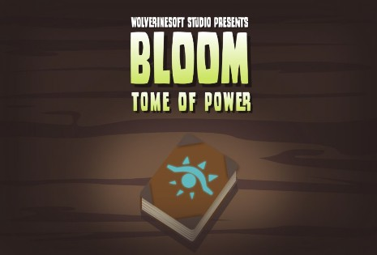
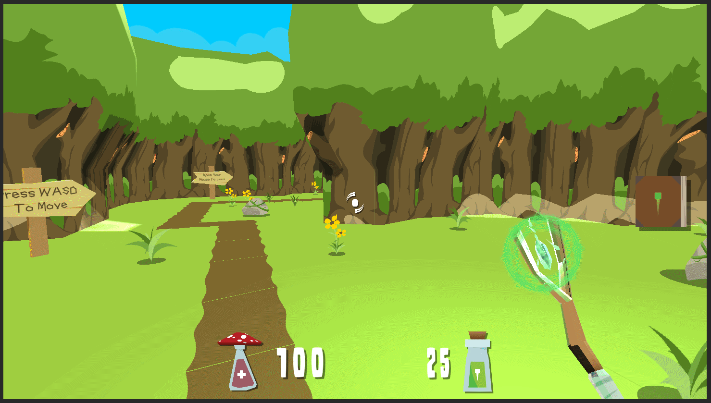
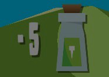
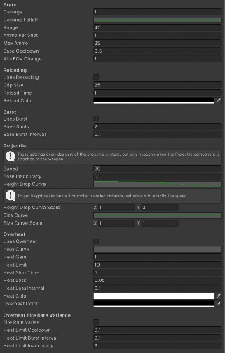

Bri Epstein (bdepst) Dev Blog 3: 11/14/21
Welcome to my third devblog for Project Bloom!

The first main time investment was weekly meetings. We’ve had a couple weekly meetings which involved tasks such as playtesting and generating ideas for improvement and discussing plans for the designs and what to work on for the week, taking up 4 hours total.
Next, I did my best to attend some sessions with the playtesters so that we could get valuable feedback on our game. For example, Austin was quite direct to the leads about the game not necessarily showing enough iteration. Even though that “wasn’t my problem” as a lowly programmer, it definitely still got me thinking about how to make my contributions as juicy as possible, and what suggestions could be made to the leads and design team to help solve this problem. I spent about 3 hours attending playtests.
In addition, I spent another 3 hours on miscellaneous tasks aside from my programming. This included 2 hours on non-meeting discussions with the team, such as discussing how to implement knockback, helping others with weapons systems since that’s what I’m most familiar with and I implemented many of them, and talking about how my implemented features could be built up even more. I also spent 1 hour on personal playtesting, so that I could really test not only overheating, but also check all the interactions between reloading, bursting, and overheating mechanics for weapons to check for edge cases and make sure things work correctly.

Next, I worked on overheating, continuing my previous work on the games’ weapon systems. “Overheating” is basically a mechanic that causes weapons to build up heat as they’re fired, eventually overheating and disabling the weapon for some time. As can be seen in the gif below, the current visual indicator is the rune becoming redder with the heat, until it becomes black upon reaching the limit and overheating. I had to make sure that the coroutines worked properly at the right times and worked for each weapon regardless of whether that weapon was active or not. There were also considerations to take into account, like when heat stacks would be added (the answer is after).

There was also a weapons system refactoring that took place this sprint, so I had to take some time to fix new issues that popped up and check that things were always working correctly, as we probably don’t want the player’s ammo to reach the negatives. This occurred because the new system didn’t have my previous safeguards in place to prevent starting a burst when one was already taking place, so they could stack and bring the player into the negatives for ammo. Another issue was that the new refactor applied heat stack gains in 2 places, so the limit would be reached in half the time.

Additionally, I was asked to add new options to the weapons system. The design team can now designate cooldowns, burst intervals, and inaccuracy stats that the weapon approaches (from its base) depending on the current heat stack count. This allows a “warming up” mechanic, where the player may have to maintain their heat stacks to keep the stats better, while also trying not to hit the limit and cause their weapon to overheat. Overall, I spent about 8 hours on overheating and related systems, as well as checking their functionality in the new refactor.
Finally, I was tasked with implementing knockback. This is for both the player and enemies, knocking either back when they take damage. This has proved to be quite difficult, as I’m most familiar with the weapons systems, and there are many interacting systems in place for movement for both the player and enemies, so there’s a lot of new code to learn. For example, the original player movement implementation always “pushes” the player to their desired speed, which would make a knockback end almost instantly and feel very unnatural.
Just for this one issue, there’s a lot of work like adding a way to keep track of whether the player is currently being knocked back (after being hit until velocity is below a certain amount?) and then using that to control whether or not the player’s normal movement functions are enabled. Then, for the enemies, they have to be able to keep moving with the navmesh even after being hit, so there’s a lot going on for both groups. So far I have spent about 6 hours on this task.
Time investment:
Meetings | 4 hrs |
Playtests | 3 hrs |
Discussion | 2 hrs |
Personal Playtesting | 1 hrs |
Overheating | 8 hrs |
Knockback | 6 hrs |
Total | 24 hrs |